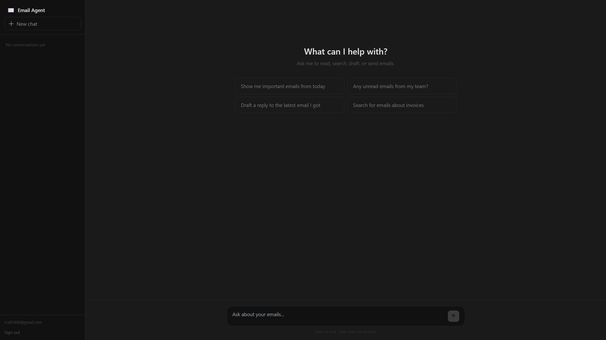
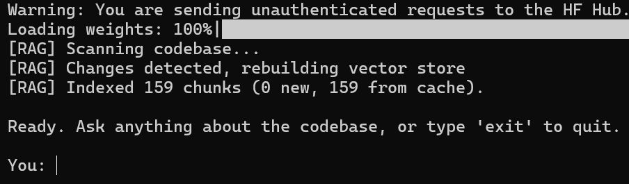
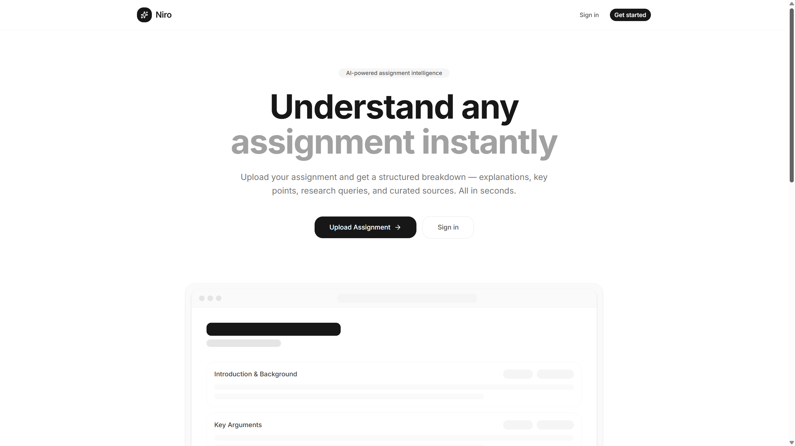
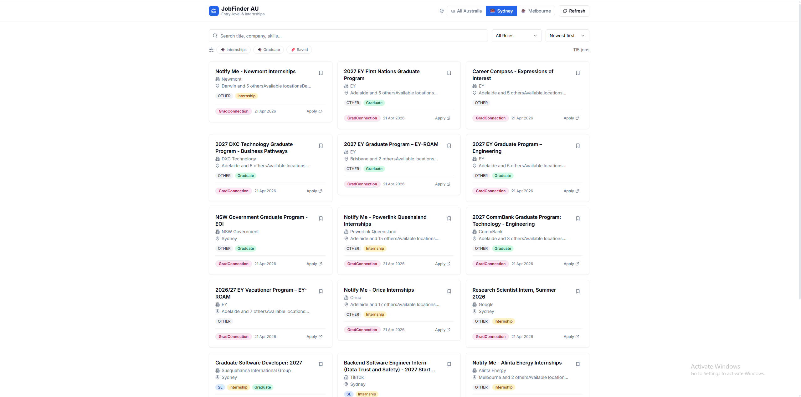

Email Agent
An AI-powered Gmail agent. Chat with your inbox - read, search, draft, and send emails through a conversational interface, with an agentic tool-calling loop streaming results in real time.
I build AI/ML and software projects. Here's a look at what I've made.
Agents, models, and AI-powered tools.

An AI-powered Gmail agent. Chat with your inbox - read, search, draft, and send emails through a conversational interface, with an agentic tool-calling loop streaming results in real time.

An AI codebase security auditor with a RAG pipeline. Chunks a repo along function/class boundaries, embeds and indexes it locally, then answers multi-turn questions about bugs and vulnerabilities with re-ranked code context and automatic conversation compaction.
Short description of the AI/ML project goes here — what it does and what makes it interesting.
Other software projects.

An LLM-powered web app that helps you work through assignments, built with TypeScript.

A job aggregation system for entry-level and internship tech roles, pulling from 10 sources with AI-generated summaries, dedup, and an automated scraping scheduler.

A tennis and soccer arbitrage scanner across Australian bookmakers and the Betfair Exchange. Scrapes odds every 60 seconds, fuzzy-matches teams/players across sites, and surfaces profitable arbs on a live web dashboard.